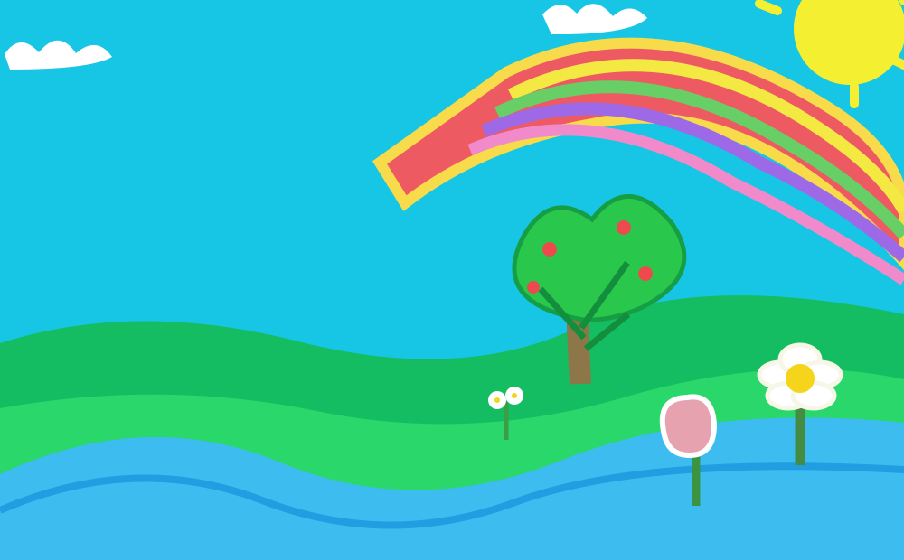
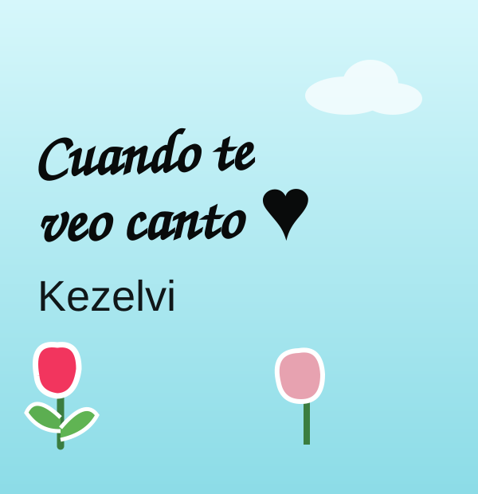

☀


“Cuando te veo canto” es una postal hecha de cielo brillante, flores y melodías. Dale play para acompañar el paisaje.
Para activar el reproductor, coloca tu MP3 en audio/cuando-te-veo-canto.mp3.